| Radar Menu | |
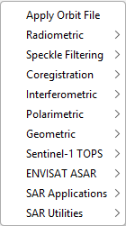
The Apply-Orbit-File operator refines the orbit state vectors with the precise orbit files which are available days-to-weeks after the generation of the product.
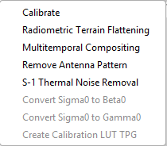
The Calibration operator performs different calibrations for ASAR, ERS, ALOS and Radarsat-2 products deriving the sigma nought images.
The Terrain-Flattening operator removes the radiometric variability associated with topography using the Radiometric Terrain Correction algorithm proposed by Small [1] while leaving the radiometric variability associated with land cover..
The Multitemporal-Compositing operator computes composite image from multi-temporal RTCs.
The RemoveAntennaPattern operator removes antenna pattern and range spreading loss corrections applied to the original ASAR and ERS products.
The ThermalNoiseRemoval operator removes additive thermal noise from SAR products.
This option creates a Beta0 virtual band from a Sigma0 band.
This option creates a Gamma0 virtual band from a Sigma0 band.
This option creates a tie point grid from calibration and noise vectors.
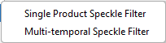
The Speckle-Filter operator reduces speckle noise in SAR images.
The Multi-Temporal-Speckle-Filter operator reduces speckle noise in co-registered SAR image time series by combining information from multiple acquisitions.
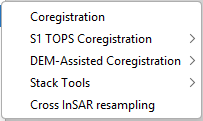
The Coregistration option performs Automatic Cross-Correlation based Coregistration.
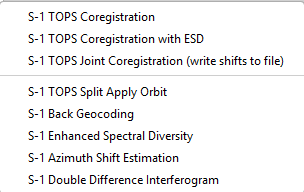
This option performs S-1 TOPS Coregistration.
This option performs S1 TOPS Coregistration with Enhanced Spectral Diversity.
Computes and exports range and azimuth coregistration shifts for a Sentinel-1 TOPS image stack.
This option performs S1 TOPS preprocessing before backgeocoding.
The Back-Geocoding operator co-registers two S-1 SLC split products (reference and secondary) of the same sub-swath using the orbits of the two products and a Digital Elevation Model (DEM).
The Enhanced-Spectral-Diversity operator estimates constant range and azimuth offsets for a stack of images.
The Azimuth-Shift-Estimation-ESD operator estimates a constant azimuth offset for the whole sub-swath using a Enhanced Spectral Diversity (ESD) method.
The Double-Difference-Interferogram operator computes the double difference interferogram for co-registered Sentinel-1 TOPS product for overlapped area between adjacent bursts.
The DEM-Assisted-Coregistration operator co-registers two or more products using the orbits of the products and a Digital Elevation Model.
This option performs a DEM-Assisted Coregistration with Cross-Correlation.
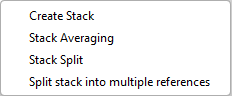
The CreateStack operator collocates two or more products based on their geo-codings.
The Stack-Averaging operator computes statistics for the corresponding bands in the given stack product.
The Stack-Split operator separates a given stack product into each individual reference and secondary products.
The MultiMasterStackGenerator operator takes a single coregistered SLC stack (one reference acquisition + N−1 secondary acquisitions, as produced by Coregistration or DEM-Assisted Coregistration) and splits it into a set of products, one per acquisition acting as the reference.
The CrossResampling operator prepares input, ERS1/2 and Envisat, data for cross interferometric processing.
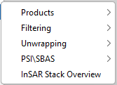
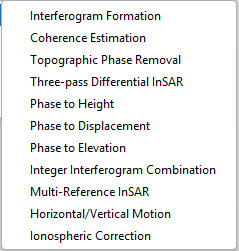
The Interferogram operator computes interferograms from stack of coregistered S-1 images.
The Coherence operator estimates coherence from stack of coregistered images.
The TopoPhaseRemoval operator estimates and subtracts topographic phase from the interferogram.
The Three-passDInSAR operator removes the topographic induced phase from an interferogram that contains topographic, deformation, and atmospheric components.
The PhaseToHeight operator converts the unwrapped interferometric phase to the heights in the radar coded system.
The PhaseToDisplacement operator converts interferometric phase to displacement map.
The PhaseToElevation operator converts interferometric phase to digital elevation map.
The IntegerInterferogram operator creates integer interferogram.
Given a coregistered stack product, the MultiMasterInSAR operator allows for computing the interferometric phase as well as estimating the interferometric coherence for arbitrary image pairs.
Given two (collocated) ascending and descending interferograms, the HorizontalVerticalMotion operator computes the horizontal (East-West) and vertical motion.
The IonosphericCorrection operator uses three interferometric products (each of which with an unwrapped interferometric phase band) to estimate and correct for ionospheric phase screens.
The RangeFilter operator filters the spectras, of stack of SLC images, in the range direction.
The AzimuthFilter operator filters the spectras, of stack of SLC images, in the azimuth direction.
The GoldsteinPhaseFiltering operator applies adaptive Goldstein filtering to reduce the residues in the later on phase unwrapping step and enhances the phase unwrapping accuracy.
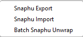
The SnaphuExport operator exports data and prepare conf file for SNAPHU processing.
The SnaphuImport operator ingests SNAPHU results into InSAR product.
The BatchSnaphuUnwrapOp operator downloads and executes SNAPHU on a set of two or more interferograms.
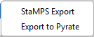
The StampsExport operator exports data for StaMPS processing.
The PyrateExport operator exports a stack of wrapped interferograms for PyRate processing.
The InSAR-Overview function gives general information about the interferometric stack.
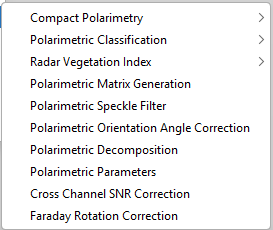
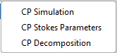
The CP-Simulation operator simulates compact pol data from quad pol data.
The CP-Stokes-Parameters operator generates compact polarimetric Stokes child parameters.
The CP-Decomposition operator performs Compact Polarimetric decomposition of a given product.
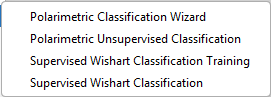
The Polarimetric-Classification operator performs the following polarimetric classification for a full polarimetric SAR product:
The Supervised-Wishart-Classification operator performs supervised Wishart classification. It consists of two major processing steps:
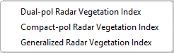
The Radar-Vegetation-Index operator computes the Radar Vegetation Index (RVI) from polarimetric SAR data.
The Compactpol-Radar-Vegetation-Index operator computes the Compact Polarimetric Radar Vegetation Index (CpRVI) from compact-pol SAR data.
The Generalized-Radar-Vegetation-Index operator computes the Generalized Radar Vegetation Index (GRVI) from full-polarimetric SAR data.
The Polarimetric-Matrices operator generates covariance or coherency matrix for given product.
The Polarimetric-Speckle-Filter operator applies a Polarimetric Speckle Filter to the data (covariance/coherency matrix data).
The Orientation-Angle-Correction operator performs polarization orientation angle correction for given coherency matrix.
The Polarimetric-Decomposition operator performs Polarimetric decomposition of a given product.
The Polarimetric-Parameters operator computes a configurable bank of general-purpose polarimetric scalar parameters and channel-algebra outputs from a quad-pol, dual-pol or compact-pol SAR product.
The Cross-Channel-SNR-Correction operator estimates and removes the cross-channel noise floor in a quad-polarimetric SAR product by exploiting the reciprocity assumption SHV = SVH.
The Faraday-Rotation-Correction operator removes the ionospheric Faraday-rotation signature from a quad-polarimetric SAR product.
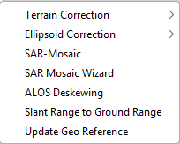
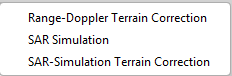
The Terrain-Correction operator corrects the topographic distortion in the raw image caused by this factor. It implements the Range-Doppler (RD) geocoding method.
The SAR-Simulation operator generates simulated SAR image using DEM, the Geocoding and orbit state vectors from a given SAR image, and mathematical modeling of SAR imaging geometry.
The SARSim-Terrain-Correction operator generates orthorectified image using rigorous SAR simulation.
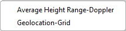
The Ellipsoid-Correction-RD operator implements the Range Doppler orthorectification method and average scene height.
The Ellipsoid-Correction-GG operator implements the Geolocation-Grid (GG) method.
The SAR-Mosaic operator combines overlapping products into a single composite product.
The ALOS-Deskewing operator removes skew distortions from ALOS images.
The SRGR operator re-projects images from slant range (range spacing proportional to echo delay) to ground range (range spacing proportional to distance from nadir along a predetermined ellipsoid).
The Update-Geo-Reference operator updates the Geo reference of the source product.
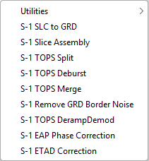
The ETAD-Deburst operator allow the user to deburst ETAD products.
The S-1 SLC to GRD graph converts a Sentinel1 SLC product to a detected ground range product.
The SliceAssembly operator merges Sentinel-1 slice products.
The TOPSAR-Split operator provides a convenient way to split each subswath with selected bursts into a separate product.
The TOPSAR-Deburst operator debursts a Sentinel-1 TOPSAR product.
The TOPSAR-Merge operator merges the debursted split product of different sub-swaths into on complete product.
The Remove-GRD-Border-Noise operator masks no-value pixels for GRD product.
The TOPSAR-DerampDemod operator performs deramp and demodulation to the input S-1 TOPS SLC product.
The EAP-Phase-Correction operator performs Elevation Antenna Phase correction for S-1 SLC product with IPF version < v2.43.
The S1-ETAD-Correction operator performs ETAD correction for S-1 TOPS SLC / Stripmap SLC / GRD products.
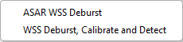
The DeburstWSS operator debursts an ASAR WSS product.
The WSS Deburst, Calibrate and Detect graph allows the users to deburst and detect a WSS product.
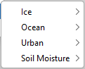
The Offset-Tracking operator performs cross-correlation on selected GCP-patches in reference and secondary images, and computes glacier velocities based on the shift computed for each GCP.
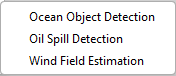
The Ocean Object Detection operator detects object such as ships on sea surface from SAR imagery.
The Oil-Spill-Detection operator detects dark spot such as oil spill on sea surface from SAR imagery.
The Wind-Field-Estimation operator retrieves wind speed and direction from C-band SAR imagery.
The Speckle-Divergence operator detects urban area.
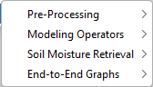
The Multi-Angle pre-processing takes a two C-band Quad Pol SLC products as input - a morning acquistion and an evening acquisition for the same date over the same area. .
The Multi-Pol pre-processing takes a single C-band Quad Pol SLC product as input.
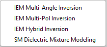
The IEM-Multi-Angle-Inversion operator performs IEM inversion using Multi-angle approach.
The IEM-Multi-Pol-Inversion operator performs IEM inversion using Multi-polarization approach.
The IEM-Hybrid-Inversion operator performs IEM inversion using Hybrid approach.
The SM-Dielectric-Modeling operator performs SM inversion using dielectric model.
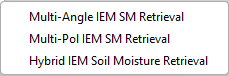
The Multi-Angle IEM SM Retrieval graph retrieves soil moisture (SM) from radar backscatter coefficients.
The Multi-Pol IEM SM Retrieval graph retrieves soil moisture (SM) from radar backscatter coefficients.
The Hybrid IEM Soil Moisture Retrieval graph retrieves soil moisture (SM) from radar backscatter coefficients.
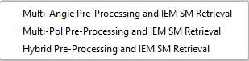
The End-to-End Graphs option provides complete processing workflows for:
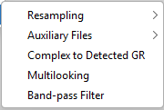
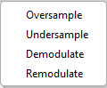
The Oversample operator upsamples a real or complex image through frequency domain zero-padding.
The Undersample operator downsamples a real or complex image using sub-sampling method or lowpass filtering method.
The Demodulate operator demodulates (and deramps if applicable) SLC so that its spectrum is in baseband.
The Remodulate operator remodulates (and reramps if applicable) a previously demodulated (and deramped if applicable) SLC.
The View ASAR XCA Product option ppens an ENVISAT ASAR XCA (External Calibration) auxiliary file in SNAP for inspection.
This option opens Sentinel-1 orbit file or calibration auxiliary file.
The Complex to Detected GR tool converts a SLC product to a detected ground range product.
The Multilook operator averages the power across a number of lines in both the azimuth and range directions.
The BandPassFilter operator applies a band-pass filter (in range) to an SLC such that the result has 1/3 the original bandwidth.